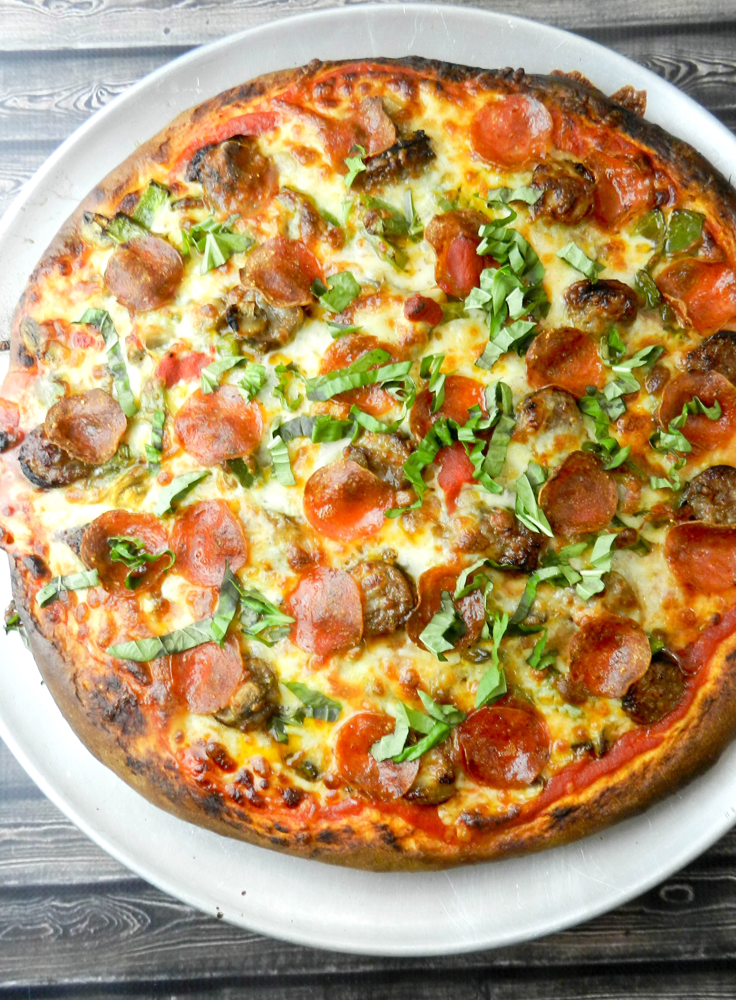

Pizza

Description
This recipe came from my nonna who immigrated from Italy at 40 and members of my family have been making it for years. It is the best! I hope you enjoy it. My fiance said I should sell it! Lol!
Ingredients
- 1¾ cups hot water
- 3 tablespoons olive oil, or more to taste
- 2 tablespoons quick-rise yeast
- 1 tablespoon white sugar
- 1 teaspoon salt
- 3 cups all-purpose flour, plus more as needed
Steps
- Beat water, olive oil, yeast, sugar, and salt together with an electric mixer until evenly combined, about 2 minutes.
- Add flour, 1 cup at a time, stirring with a wooden spoon after each addition, until dough almost comes away from the sides of the bowl.
- Knead the dough with your hands until soft and smooth.
- Lightly oil a bowl and place dough in the bowl, flipping to coat all of the dough.
- Let dough rest for 5 to 10 minutes.
- Add topping.
- Bake for 5 minutes at 300 degrees Celsius.